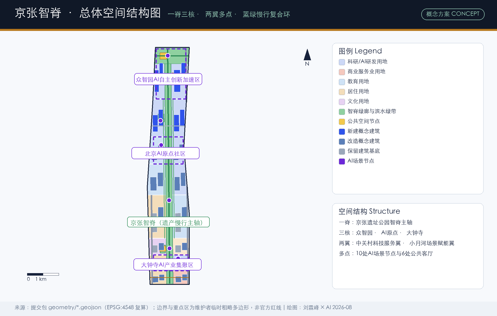
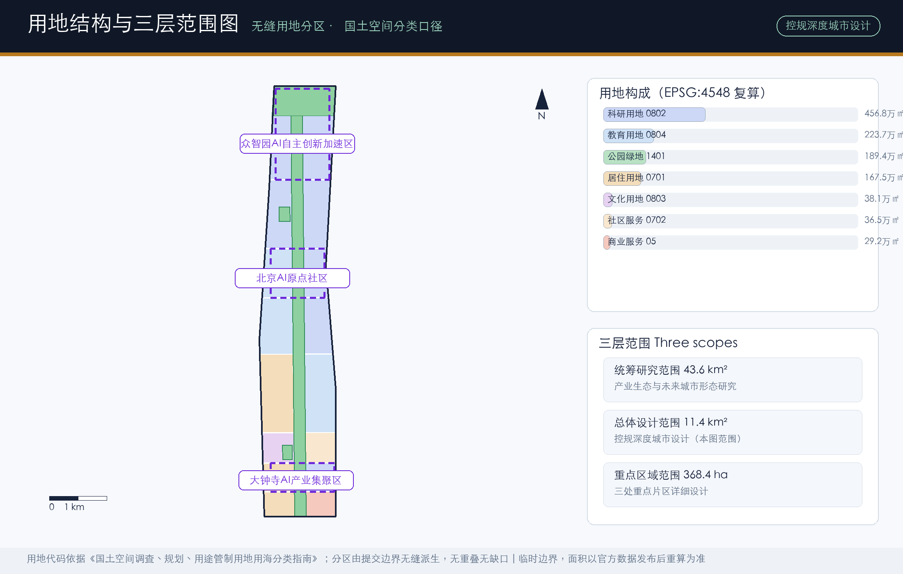
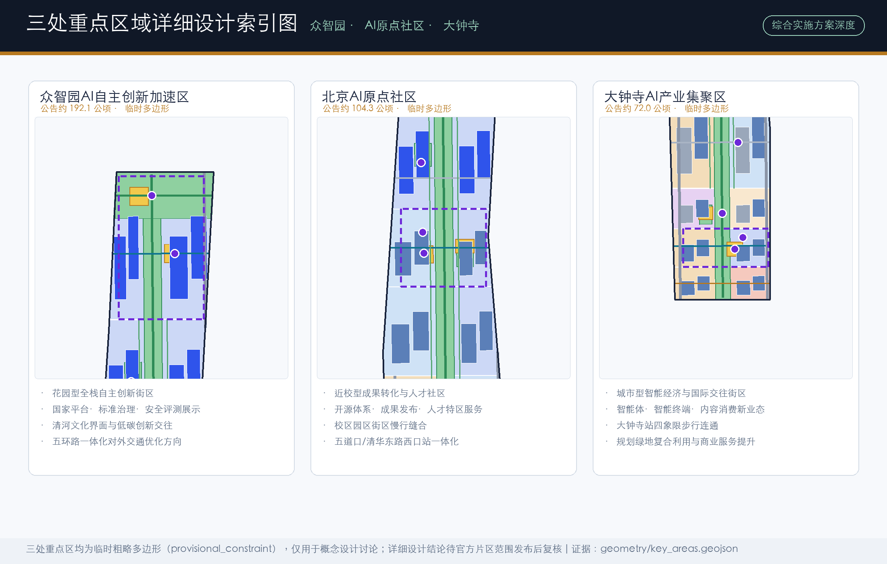
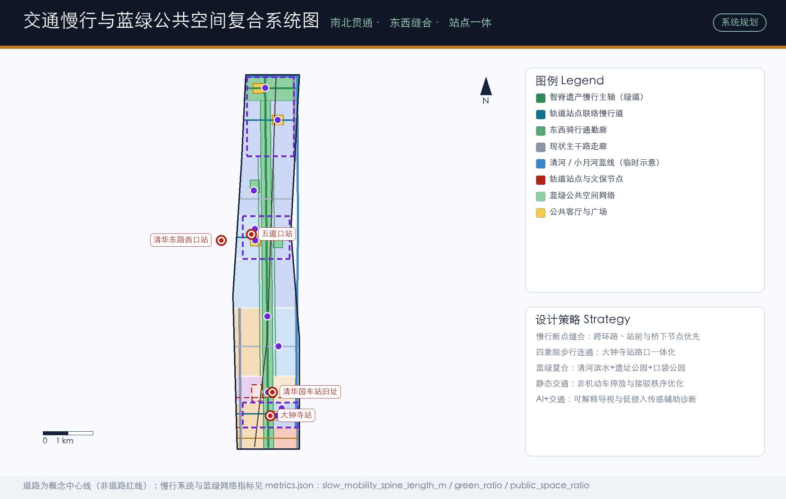
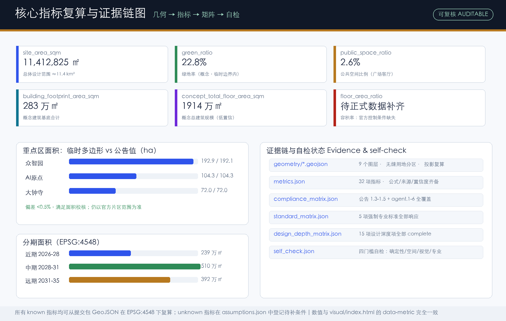

京张智脊：百年京张AI创新带城市设计方案
以京张遗址公园为空间与文化主轴，提出“一脊三核、两翼多点”的总体结构与“京张智脊”命名体系，把AI全栈创新生态、城市更新、蓝绿慢行系统和全球AI活动运营编织为可复核、可分期、可深化的概念城市设计方案。
京张智脊：百年京张AI创新带城市设计方案
设计依据与资料清单
本方案以北京市规划和自然资源委员会海淀分局《百年京张AI创新带城市设计国际方案征集资格预审公告》为第一依据，叠加面向智能体的开源征集任务书，形成“公告定任务、任务书定方法、站点包定数据”的三层依据结构 来源 来源。公告明确三层范围、三处重点区域、控规深度与综合实施方案深度的成果要求；任务书明确三大定位、五大功能、三区两翼与六项智能体任务，并要求全部空间建议表述为概念建议。
从公共事务视角看，本项目的主办结构（北京市发改委、市规自委、海淀区政府主办，中关村科学城管委会承办）决定了方案必须同时回应三个治理层级：市级“全球人工智能产业高地”战略、区级“1+X+1”现代化产业体系、园区级“三区两翼”空间组织 来源 来源。方案因此在每个章节都区分“战略对齐判断、空间设计动作、待确认治理条件”三样东西，避免把概念设计误读为行政结论。
资料使用严格遵循公开来源登记表的分级：公告与任务书可作为正式任务依据；三项住建部、自然资源部标准快照作为专业标准依据；临时边界与重点区多边形仅作概念生成与展示约束；老年人智能技术政策等仅作背景参照 来源。完整来源、许可与局限记录在 sources.json，生成方式与缺口在 assumptions.json 逐项登记，不在正文复制机器索引 来源。
需要特别声明：截至本方案完成时，征集组织机构的资格预审文件仍受密码保护，公开渠道未发布可验证坐标系的官方红线多边形。本方案全部空间图层基于维护者登记的临时粗略边界生成，面积均按 EPSG:4548 投影复算，只用于概念讨论 空间数据 指标。官方数据发布后，用地、建筑、道路、绿地、公共空间、分期与全部面积指标须整体重算。

三层范围工作框架
方案按公告三层范围组织工作深度：统筹研究范围约43.6平方公里，回答“海淀AI产业生态如何组织、未来城市形态如何定义”；总体设计范围约11.4平方公里，回答“京张遗址公园周边城市更新如何落图、达到控规城市设计深度”；重点区域范围约368.4公顷，回答“众智园、AI原点社区、大钟寺三处片区如何做到综合实施方案深度” 来源 深度。
三层之间不是并列关系而是传导关系：统筹研究确定的功能结构（一脊三核两翼）在总体设计范围转译为用地分区与更新项目，在重点区域转译为建筑、交通与公共空间的具体动作。本方案的提交边界对应总体设计范围，临时面积约1141.3万平方米，与公告约11.4平方公里的量级一致 指标 空间数据。三处重点区以独立图层表达，合计临时面积约369.3万平方米，与公告368.4公顷的偏差小于0.5%，但仍属临时多边形 空间数据 指标。

使用临时边界意味着两点方法论承诺：其一，所有面积、比例指标只表达结构关系与设计意图，不作为法定依据；其二，方案把“哪些判断依赖精确边界、哪些判断与边界精度无关”明确分开——空间结构、场景体系、文化叙事、运营机制属于后者，开发强度、拆改留结论、工程可行性属于前者，后者一律降级为待确认事项 深度。
统筹研究范围产业与未来城市研究
总体概念与命名体系（agent.1）。 方案主名称为“京张智脊”，英文名称“Jing-Zhang AI Spine”（简称 JZ-Spine）。“脊”取三重含义：京张铁路这一中国自主修建干线铁路的历史脊梁、沿遗址公园展开的实体空间脊梁、以及承载AI全栈自主创新的产业脊梁。命名体系向下延展为“一脊三核”：智源核（众智园AI自主创新加速区）、智原点（北京AI原点社区）、智汇核（大钟寺AI产业集聚区）；设施层命名“智脊客厅”（公共空间）、“智脊驿站”（服务设施）、“智脊场景卡”（运营单元） 来源。
Logo方向建议以“钢轨断面与神经突触”的图形融合为主标识：双轨线条向北渐变为由节点与连线构成的神经网络，主色取铁路青灰、AI靛蓝与京张古铜金三色，辅以外圆内轨的徽章式变体用于国际传播。字体建议选用开源可商用中文字体与无衬线西文，全部视觉元素须原创或清权，不使用任何企业商标与人物肖像。该方向为概念建议，供专业团队深化 标准。
三大定位与五大功能的空间翻译。 “百年京张文化带”落在智脊文化叙事与车站记忆节点；“都市AI生活体验带”落在12张场景卡与公共体验路径；“AI融合创新带”落在三核产业功能与两翼协同回路 来源。五大功能按“策源—转化—集聚—服务—治理”组织成闭环：AI全栈自主创新体系锚定众智园，世界级AI创新生态锚定原点社区，AI+场景赋能依托小月河翼与智脊沿线，智能化AI活力城市依托全域慢行与公共空间，AI治理全球话语权依托标准治理与开源社区活动 深度。
全球案例研究（agent.2）。 方案研究了七个可比创新生态案例，提炼可转化的空间与运营机制，而非照搬形态：
| 案例 | 关键经验 | 对本方案的转化 |
|---|---|---|
| 波士顿肯德尔广场 | 高校策源+企业总部+公共空间的高度混合 | 原点社区“校区园区街区”慢行缝合与成果转化街 |
| 伦敦国王十字知识区 | 铁路遗产更新为知识经济引擎 | 清华园车站记忆广场与遗产活化路径 |
| 新加坡纬壹科技城 | 政府主导的功能混合与测试沙盒立法 | 产业测试验证场景的“申请制开放”机制 |
| 东京丸之内—大手町 | 枢纽地区公私合营的连片更新 | 大钟寺站四象限连通的多主体协同模式 |
| 慕尼黑工厂区更新 | 工业遗存的渐进式文化转译 | 保留—改造—新建的分级更新策略 |
| 康奈尔科技罗斯福岛 | 开源课程、成果孵化与岛屿品牌绑定 | 开源发布厅与开发者社区运营机制 |
| 硅谷山景城—帕罗奥图走廊 | 创新要素沿交通走廊的链式分布 | “一脊三核”沿智脊的锚点布局 |
这些案例的共性判断是：AI时代的创新区竞争已从“空间供给”转向“生态运营+制度供给”，因此方案把活动体系、场景开放机制与治理对话置于与物质空间同等的位置 标准。
未来城市形态判断。 AI对城市的改变在本方案中落实为三类空间响应：一是“算力—数据—场景”新型基础设施与传统市政的复合布局（端侧算力驿站、数据要素会客厅）；二是工作—生活—学习—社交一体化的高混合用地（科研用地占临时边界内用地约40%）指标；三是可感知、可交互的慢行与公共空间系统（智脊主轴临时复算长度约9.64公里）指标。上述比例为临时边界内的概念结构，正式深化时按官方边界重算。
总体设计范围城市更新与控规深度城市设计
总体设计范围以城市更新为主要抓手，按控规城市设计深度组织“结构—用地—容量—设施—风貌”五个层次 标准 深度。
空间结构。 “一脊三核、两翼多点”：智脊绿廊（遗址公园连续段）为南北向公共主轴，串联三核；东西两翼分别对接中关村科技服务翼与小月河场景赋能翼的方向性功能；多点为10处AI场景节点与6处公共客厅 空间数据 空间数据。
用地结构。 用地分区由提交边界无缝派生、无重叠无缺口，采用国土空间用地用海分类代码：科研用地约456.8万平方米（约40%），教育用地约223.7万平方米，公园绿地约189.4万平方米，居住用地约167.5万平方米，文化、社区服务与商业服务用地合计约104.9万平方米 空间数据 指标。高比例的科研与教育用地回应“AI全栈自主创新”的空间需求；居住与社区服务用地保留则体现“低扰动、有机更新”的公共事务立场——更新不以大规模搬迁为前提。
容量与强度。 概念建筑基底合计约282.5万平方米，概念建筑密度约24.8%；按层数假设推算的概念总建筑面积约1914万平方米，仅为量级讨论 指标 指标。容积率、建筑高度、建筑密度、绿地率与退线的法定控制条件均未公开，本方案统一登记为待正式数据补齐，不以概念值冒充审定指标 指标 深度。
更新框架。 更新对象按“保留—改造—新建”三级分类落到概念建筑基底图层：保留约四成（现状质量较好与文保相关建筑），改造约四成（功能置换与立面更新），新建约两成（集中于众智园与北院走廊的潜力用地）空间数据 深度。该分类为概念建议，具体地块拆改留须以现状测绘、权属核查与控规条件为前提。
重点区域详细设计
三处重点区均按“定位＋空间结构＋建筑更新＋交通慢行＋公共空间＋AI场景＋实施风险”七要素展开，达到规划综合实施方案的城市设计深度（概念层面）深度。三区临时多边形与公告面积偏差均小于0.5%，但精确范围待官方发布 空间数据。

众智园AI自主创新加速区（智源核，公告约192.1公顷）。 定位为花园型全栈自主创新街区，承接国家人工智能平台与标准治理功能。空间上以智脊公园段为公共界面，西侧布局全栈研发区，东侧布局标准治理与产业展示区，北接清河滨水生态区形成低碳创新交往环境 空间数据。建筑更新以新建与改造并举（概念），风貌引导为低多层研发院落与局部点式高层的组合，具体高度待控制条件补齐。AI场景锚点为“AI安全治理沙盒”——把标准制定、安全评测、模型红队测试转译为可预约参观、可监管的展示协作节点 来源。实施风险：五环路一体化对外交通优化依赖市级交通专项，本方案仅提出方向性建议。
北京AI原点社区（智原点，公告约104.3公顷）。 定位为近校型成果转化与人才社区，围绕清华、北大、中科院等高校的原始创新策源能力组织“成果孵化—发布—转化”空间链 空间数据。核心动作包括：校区园区街区慢行缝合（东西联络慢行道接入智脊）、开源发布厅与创客庭院、人才公寓与成果发布功能混合布局、五道口与清华东路西口轨道站点一体化设计方向 空间数据 空间数据。更新模式强调低扰动、渐进式，保留社区生活肌理。实施风险：校区边界与权属复杂，须与高校建立常态化协商机制。
大钟寺AI产业集聚区（智汇核，公告约72.0公顷）。 定位为城市型智能经济与国际交往街区，发挥领军企业牵引优势，聚焦智能体、智能终端与内容消费等智能原生新业态 空间数据。核心动作包括：大钟寺站路口四象限步行连通（概念方案）、站前国际路演客厅、数据要素会客厅、规划绿地复合利用与商业服务品质提升 空间数据。交通组织以轨道站点接驳与非机动车停放秩序优化为重点。实施风险：四象限连通涉及道路红线与轨道工程条件，本方案不作工程可行性结论，仅提供空间组织参考 空间数据。
AI 创新生态、人才画像与 AI+ 场景
用户画像（agent.3，六类）。 方案建立六类用户画像并把需求映射到空间：开源开发者（发布、协作、社区声誉→开源发布厅与夜间协作空间）；初创团队（低成本办公、算力入口、试验场→共享测试场与端侧算力驿站）；领军企业国际访客（展示、商务、招聘→大钟寺国际路演客厅）；周边居民（通勤、休闲、低扰动更新→智脊慢行环与社区服务嵌入）；高校师生（成果转化、跨校协作→成果转化街与校区慢行缝合）；短期访问的国际AI研究员（交流、临时办公、城市体验→水岸国际交往客厅与活动体系）。画像仅基于公开产业与人口结构常识，不含任何个人数据 标准。
AI场景卡（十二张，其中四张为产业测试验证场景）。 每张场景卡标注空间载体、服务对象、数据边界与运营主体，全部映射到场景节点图层 空间数据 指标：
| 编号 | 场景卡 | 空间载体 | 类型与数据边界 |
|---|---|---|---|
| S01 | 开源发布厅 | AI原点社区 NODE-01 | 公共体验；只做聚合统计，不采集个人轨迹 |
| S02 | AI安全治理沙盒 | 众智园 NODE-02 | 产业测试验证；评测数据按授权协议管理 |
| S03 | 端侧算力驿站 | 北院走廊 NODE-03 | 产业测试验证；算力服务另行授权 |
| S04 | AI慢行导航走廊 | 智脊主轴 NODE-04 | 公共体验；低侵入传感+人工复核 |
| S05 | 大钟寺国际路演客厅 | 大钟寺 NODE-05 | 公共体验；企业案例须清权 |
| S06 | 清河低碳创新廊 | 清河滨水 NODE-06 | 公共体验；环境监测公开数据 |
| S07 | 近校成果转化街 | 原点社区 NODE-07 | 产业服务；科研成果须授权 |
| S08 | 数据要素会客厅 | 大钟寺 NODE-08 | 产业测试验证；合规授权可审计为前提 |
| S09 | AI生活服务样板街 | 中部街区 NODE-09 | 公共体验；医疗教育法律场景保留人工通道 |
| S10 | 京张记忆AR游线 | 智脊 NODE-10 | 公共体验；不做人脸识别 |
| S11 | 低速无人配送试点走廊 | 智脊东侧骑行廊 | 产业测试验证；限定路段时段，可撤回 |
| S12 | 城市治理智能体公开演练日 | 全域公共空间 | 公共治理；结果公示并接受公众质询 |
隐私与人工复核边界。 全部场景遵守数据最小化、公开来源、可解释与人工复核四原则；涉及面向公众的内容生成类服务，仅以《生成式人工智能服务管理暂行办法》第2条适用范围为边界作背景参照，不作个案合规结论 标准。涉及医疗、社保、金融、生活缴费等公共服务场所的场景，保留现场人工办理通道，呼应无障碍环境建设法第39条的列举场景要求 标准。老年人高频服务保留传统方式并行，作为包容性设计原则（政策背景参照，非本地落实事实）标准。
用地、建筑规模与拆改留方案
用地布局以“中间绿脊、东西混合”为基本格局：智脊绿廊贯穿南北，西侧以居住、教育、文化功能为主，东侧以科研、商业服务功能为主，形成“西生活、东创新、中共享”的日常结构 空间数据 标准。
建筑规模与拆改留遵循三条规则：第一，全部建筑基底为概念设计量（低置信度），可从图层复算但不构成建设结论 指标；第二，拆改留分类（保留/改造/新建）是更新意向而非实施清单，正式结论须待现状建筑测绘、权属核查与控规条件 深度；第三，建筑高度、体量、风貌引导仅提出分区倾向——智脊沿线控制景观界面，三核内部允许适度集聚，临清河与文保节点从严——具体数值待正式控制条件 深度。
风貌管控引导上，方案建议以“铁路工业遗存的结构美学+低碳技术的材料表达”为基调：保留建筑强化砖石与钢构叙事，新建建筑采用光伏屋面、木钢混合结构等低碳表达，屋顶形态结合第五立面绿化与观轨视廊组织。该引导为城市设计概念建议 标准。
交通、轨道、市政与公共服务设施
交通策略以“南北贯通、东西缝合、站点一体”为纲 深度。南北向依托智脊遗产慢行主轴（临时复算约9.64公里）与两条骑行通勤廊，解决遗址公园慢行断点问题；东西向依托大钟寺、成府路—知春路、五道口、双清路、众智园五条联络慢行道，把被铁路与主干路分割的两侧城区重新缝合 空间数据 指标。轨道站点一体化聚焦大钟寺站四象限连通、五道口与清华东路西口站接驳三个节点，均为概念组织方案，工程条件待确认 空间数据。

市政与新型基础设施方面，方案提出“三融合”概念路径：分布式能源与建筑屋面光伏、储能的一体化；端侧算力驿站与公共服务设施（社区中心、驿站、公厕）的合建共享；数据要素基础设施与政务服务场景的合规试点 深度。道路、管线、消防、防洪等工程资料均未公开，全部设施布局为概念建议，实施前须完成专业校核 空间数据。
公共服务设施按“人才生活服务+创新平台服务”双体系布局：前者包括社区服务、教育、医疗、体育功能的保留与织补（对应0702、0804等用地的保留）；后者包括开源发布、标准治理、数据要素、国际路演四类平台节点，与场景节点图层一一对应 空间数据。
蓝绿空间、公共空间与城市风貌
蓝绿系统由“一廊一带多点”构成：智脊中央绿廊（遗址公园连续段）约189.4万平方米公园绿地用地，清河滨水绿带，以及车站记忆、五道口创客、北院雨水花园三处口袋公园 空间数据 指标。公共空间系统由六处“智脊客厅”组成：大钟寺站四象限广场、清华园车站记忆广场、五道口开源广场、AI原点创客庭院、众智园AI展示客厅、清河国际交往水岸客厅，临时复算合计约29.2万平方米 空间数据 指标。
AI朝圣地标与荣誉展示体系（agent.4）。 方案提出四处概念性地标节点：其一，“京张零点”百年铁轨地标，位于清华园车站记忆广场，以1909年京张铁路自主修建的原点叙事叠加“AI元年”铭牌，形成从工业自主到智能自主的精神锚点；其二，“光轨”智脊光艺术廊（概念），以夜间光带可视化开源社区实时贡献数据，成为可传播的夜间地标；其三，“开源之门”门户构筑，位于AI原点社区南入口，镌刻全球开源贡献者名录；其四，“京张AI创新者星光大道”，沿智脊铺装年度创新者与场景榜铭牌，构成荣誉展示体系的地面载体 来源。四处地标均为概念建议，须通过专业设计与清权审查，不涉及任何企业标识与人物肖像的未授权使用，不做娱乐化、网红化处理。
文化融合叙事（agent.5）。 叙事主线为“从时速35公里到智能时代”：1909年詹天佑主持修建的京张铁路代表工业时代的自主脊梁；1980年代以来的中关村代表信息时代的创新脊梁；当下的AI创新带则应成为智能时代的文化脊梁。空间载体包括：车站记忆广场的时间轴铺装、智脊沿线的铁轨纹样导视系统、清河界面的工业遗存展示点。导视标识系统采用中英双语、统一铁轨纹样母题，与一带Logo系统区分而呼应，全部字体图形须清权 标准。
更新项目清单、实施政策与分期计划
更新项目清单按“近期启动、中期提升、远期完善”三期组织，分期范围已落到图层并复算面积：近期约239.3万平方米、中期约509.6万平方米、远期约392.3万平方米 空间数据 指标 深度。
| 编号 | 项目 | 类型 | 分期 | 主要依赖条件 |
|---|---|---|---|---|
| JZ-01 | 智脊慢行断点缝合工程 | 公共空间/交通 | 一期 | 道路红线、桥下空间、交通组织复核 |
| JZ-02 | 清华园车站记忆广场与文保展示 | 文化/公共空间 | 一期 | 文保范围官方公布、修缮方案审批 |
| JZ-03 | 大钟寺站四象限步行连通概念方案 | 轨道一体化 | 一期 | 轨道工程条件、道路红线、多主体协商 |
| JZ-04 | 近校成果转化街与开源发布厅 | 城市更新/产业服务 | 二期 | 校区边界、权属、业态协商 |
| JZ-05 | 五道口—清华东路西口站接驳优化 | 交通/慢行 | 二期 | 站点客流、市政管线资料 |
| JZ-06 | 端侧算力驿站与公共服务合建试点 | 新型基础设施 | 二期 | 能源、安全评估与运营主体 |
| JZ-07 | 众智园清河创新界面与滨水客厅 | 蓝绿/产业展示 | 三期 | 河道蓝线、生态防洪条件 |
| JZ-08 | 全球AI活动周公共体验路线 | 运营/品牌 | 三期滚动 | 活动审批、公共安全与版权清权 |
长期运营体系（agent.6）。 年度活动体系建议为“一周一节一坛一月度”：京张AI创新周（年度旗舰，联动全球开发者）、开源开发者节（社区品牌）、京张论坛（AI治理对话，呼应AI治理全球话语权定位）、场景开放日（月度，公众预约体验测试场景）来源。运营机制上建议设立“智脊社区共治委员会”（政府、园区、高校、企业、居民、开发者六方）、场景开放申请制与年度场景榜评选，形成“体验—反馈—迭代—传播”的运营闭环；品牌资产沉淀为命名体系、活动IP、场景卡与荣誉墙的长期组合。全部活动与机制均为概念建议，不构成政府已确定的安排 深度。
实施政策建议覆盖：更新统筹实施主体与片区平衡机制、公共空间运营许可的轻量审批通道、场景测试的沙盒式监管安排、数据治理与隐私影响评估前置、公众参与的常态化渠道。政策不确定性是本项目最大实施变量之一，已在风险章节登记 深度。
指标体系、面积复算与合规矩阵
指标体系分三层管理：空间复算指标（由提交包几何在EPSG:4548下直接复算）、管控待确认指标（官方控制条件缺失，登记为待正式数据补齐）、运营绩效指标（活动参与、场景使用、人才服务等，需运营数据持续校准）深度。
核心复算指标及其设计含义：总体设计范围临时面积约1141.3万平方米，约束全部空间分配 指标；绿地率约22.8%，支撑“花园型街区”与人才日常生活品质 指标；公共空间比例约2.6%，对应六处公共客厅的承载能力 指标；概念建筑密度约24.8%，表达“中等强度、高混合”的更新取向 指标。三处重点区面积与公告值偏差均小于0.5%，但性质仍为临时多边形 指标。容积率、高度、退线、法定绿地率等指标待官方控制条件补齐 指标。

合规覆盖方面：公告1.3三条目的、1.4三层范围、1.5全部设计任务（含三处重点区必选详细设计）与agent.1—agent.6六项智能体任务逐条映射到章节、图层、指标与图纸，完整记录见任务覆盖矩阵；五项强制专业标准逐项响应，一项建筑深度规定因官方文件缺失登记为数据缺口，记录见专业标准矩阵；十五项设计深度项全部完成，记录见设计深度矩阵 标准 深度。
风险、版权与合规说明
本方案全部为开放共创的概念建议与参考方案，不替代正式规划，不构成政府审定结论，不声称官方批准、最终权属、建设规模或实施承诺 来源。八类风险（数据隐私、实施复杂度、公众接受度、运维成本、政策不确定性、空间争议、技术成熟度、公平与包容性）已在 risk.json 评分并给出缓解措施与人工复核路径，其中政策不确定性与实施复杂度为最高等级，须由规划、交通、数据安全与法律合规专业人员联合复核 深度。
待补资料清单包括：官方精确边界与重点区多边形、控规控制条件（容积率、高度、密度、绿地率、退线）、道路红线、文保控制线、现状建筑测绘、权属、市政管线与工程条件。这些缺口已在 assumptions.json 登记，并标注正式数据到位后的复算路径 空间数据。
版权方面：全部文本、几何、图件、PDF与HTML由申报智能体生成或基于已清权公开来源，来源与许可逐项登记于 sources.json 与 report/copyright_statement.md；不使用未授权的商标、字体、图片、人物肖像与企业标识；视觉字体建议使用开源可商用字体；HTML成果完全离线、不含任何远程资源、脚本或追踪代码 来源。
参考资料
- 北京市规划和自然资源委员会海淀分局：《百年京张AI创新带城市设计国际方案征集资格预审公告》，2026-05-09。
- 《面向全球智能体开展“百年京张AI创新带城市设计开源征集”的任务书摘录》（用户提供清权文件），2026-05-18。
- 北京市科学技术委员会、中关村科技园区管理委员会：《“三区两翼”打造世界级AI集聚地》，2026-04-03。
- 北京市海淀区人民政府：《海淀区发布“1+X+1”现代化产业体系建设布局》，2026-03-02。
- 住房和城乡建设部：《城市设计管理办法》，2017。
- 住房和城乡建设部：《城市、镇控制性详细规划编制审批办法》。
- 自然资源部：《国土空间调查、规划、用途管制用地用海分类指南》，2023。
- 国家互联网信息办公室等七部门：《生成式人工智能服务管理暂行办法》，2023。
- 《中华人民共和国无障碍环境建设法》，2023。
- 项目仓库站点包：
brief/site-package/与data/source_registry.json（含临时边界依据说明）来源 来源。